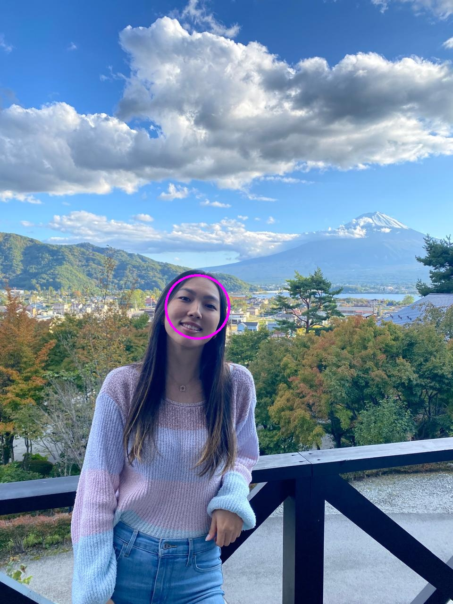
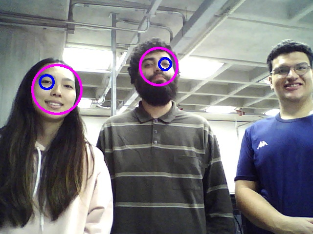
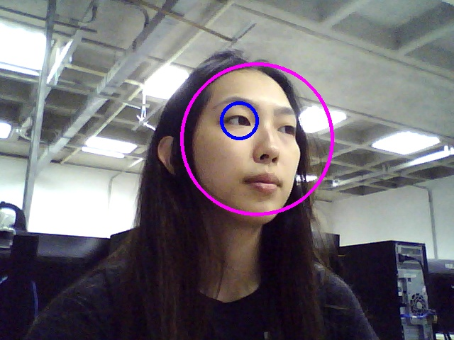

Este experimento aborda a implementação de técnicas de visão computacional para detecção de objetos e rostos utilizando o Cascade Classifier, um método empregado em aplicações de reconhecimento de padrões devido à sua eficiência e precisão. A teoria subjacente ao uso de classificadores em cascata, baseada em algoritmos como Haar Cascade, é explorada com referência às bibliotecas e ferramentas do OpenCV, conforme documentado no guia oficial da versão 4.x.
Nos experimentos desenvolvemos programas em C++ para detectar objetos e rostos em diferentes contextos, como imagens pré-carregadas e transmissões de vídeo em tempo real. O primeiro experimento envolve a leitura de imagens estáticas, incluindo fotos dos membros da equipe e frames de vídeos previamente trabalhados. O segundo expande a funcionalidade para captura ao vivo por meio de uma webcam, incorporando o processamento em tempo real e a possibilidade de salvar imagens processadas ao pressionar uma tecla.
O Cascade Classifier é um método de aprendizado supervisionado usado para detecção de objetos, popularizado pelo uso de características de Haar. Ele funciona como uma sequência de classificadores em cascata, onde cada etapa avalia uma região específica de uma imagem para determinar a presença de um objeto de interesse.
O experimento foi dividido em duas etapas, utilizando programas em C++ com a biblioteca OpenCV:
1. Detecção em Imagens Estáticas
haarcascade_frontalface_default.xml ou outro, para realizar a detecção.CascadeClassifier.detectMultiScale() para identificar objetos ou rostos nas imagens.cv::rectangle().cv::imwrite().2. Detecção em Vídeo ao Vivo
cv::VideoCapture.Ambos os programas destacam a facilidade de integração do Cascade Classifier com o OpenCV, permitindo uma implementação eficiente para a detecção de objetos e rostos em diferentes contextos.
Para realizar a atividade, utilizamos os seguintes recursos:
Inicialmente, criamos um arquivo texto "CMakeLists.txt", que define as configurações do projeto para pada item do projeto.
Código Fonte:
Para cada item do projeto, criamos o arquivo em C++, responsável por implementar as funcionalidades do programa.
O método CascadeClassifier.detectMultiScale() da biblioteca do OpenCV será utilizado para a deteção de rostos.
Código Fonte:
Foi utilizada os mesmos métodos de deteção de rostos do item anterior. Neste item, vamos fazer a leitura de imagem da webcam e utilizamos a classe cv::VideoWriter para gravar os quadros processados em um arquivo de vídeo.
Código Fonte:
Após a criação desses arquivos, os comandos "cmake ." e, posteriormente, "make" foram executados no terminal para compilar o programa e gerar o arquivo executável correspondente.
Utilizando os programas desenvolvidos e seguindo o roteiro dado, obtivemos os seguintes resultados:
Detecção de rosto da imagem Lia
Detecção de rosto da imagem Leonardo
Detecção de rostos da imagem do Grupo
Detecção de rosto utilizando a Webcam
Este trabalho foi possível compreender as limitações e as potencialidades do Cascade Classifier em tarefas de detecção de objetos e rostos, tanto em imagens estáticas quanto em vídeos ao vivo. Embora eficiente para detecção de padrões previamente treinados, o desempenho pode ser comprometido por fatores como iluminação inadequada, variações de ângulo ou objetos similares no fundo. Como nos caso da detecção em vídeos ao vivo, o uso de uma webcam proporcionou um desafio adicional ao lidar com dados dinâmicos e ruídos de captura. Além disso, em algumas imagens não foi possível a detecção do rosto por fatores como iluminação, variações de ângulo ou até pelo tamanho do rosto na foto. Isso reforça a necessidade de calibração cuidadosa e, em alguns casos, a adoção de abordagens complementares, como redes neurais convolucionais, para tarefas mais complexas. Ainda assim, o algoritmo mostrou-se suficientemente eficiente para identificar objetos em diferentes condições.
Em resumo, o projeto contribuiu significativamente para o aprendizado prático dos conceitos de visão computacional, mostrando como as ferramentas disponíveis podem ser aplicadas para resolver problemas reais de forma eficiente e precisa.